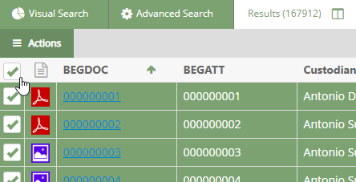
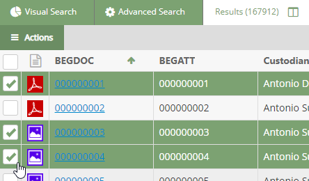
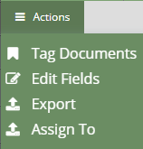

Log into
Complete the initial steps to open the Search Results tab or the
Optional:
Sort the documents in the Search Results tab or the Review Grid. (See
All documents: To perform a mass action on all documents in the current document set:
-
Click the check box in the column heading row to select all the documents as shown in the following figure.

-
Skip to step 6.
Selected documents: To perform a mass action on selected documents in the current document set:
-
Select the check boxes associated with any documents you would like to perform a mass action as shown in the following figure.

-
Continue with the next step.
Select  in the mass action toolbar, then click the mass action you would like to perform. Refer to the image below.
in the mass action toolbar, then click the mass action you would like to perform. Refer to the image below.

Complete one of or more of the following mass action procedures.
Repeat this procedure for other groups of documents that need mass actions performed the same way.
 .
.
 button as shown in the following figure. All items are selected.
button as shown in the following figure. All items are selected.